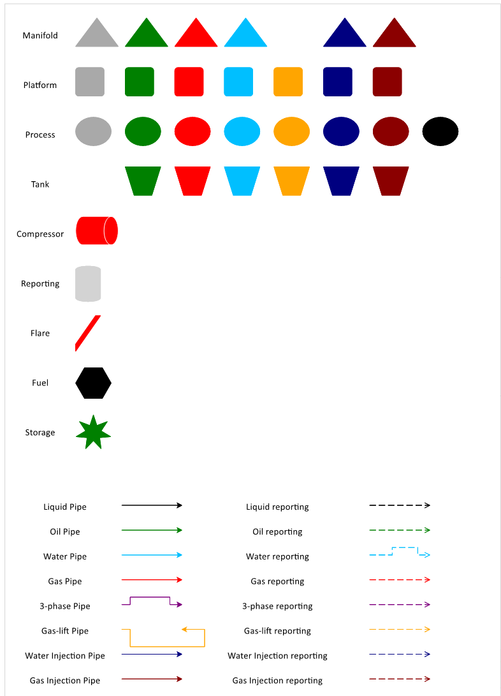
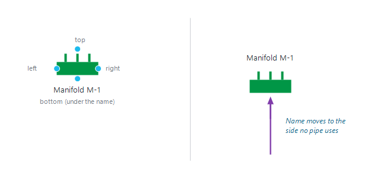

|
Network editor — drawing the network
1. Overview
The network is drawn directly on the diagram of the Network window (click "Network" in the "Expertise" group of the main ribbon). Nodes are icons, pipes are coloured arrows, and the colour of a pipe is the fluid it carries. What the network means for the forecast (constraints, splits, reporting nodes) is described in Network modelling.
A network is drawn either with the engineering-style icons (manifold, platform, FPSO, compressor, pump, flare…) or with the older classic shapes (triangle, rounded square, ellipse…). Both are read the same way by Precept; an old network can be converted to the icons at any time (section 6).
2. The palette — "Draw Network"
Click "Draw Network" on the ribbon. The diagram goes full screen and a palette appears on it, to the left of the network:
•A network that uses the icons, or a new (empty) network, gets the icon palette described below.
•A network still drawn with the classic shapes gets the classic palette (picture below). Convert it to the icons to use the new palette.

The classic palette: one shape per node type, in each fluid colour, and the pipes and reporting lines.
The palette is not part of the network: it is removed automatically when the network is saved. To remove it before, click its frame and press Delete.
2.1 Fluid colours
Most node icons come in several colours, one per fluid: grey (any fluid), green (oil), red (gas), light blue (water), orange (gas-lift), navy (water injection), dark red (gas injection), black (liquid, process only). The colour fills the whole body of the manifolds, platforms, process and tanks. Pipes use the same colours, plus purple for 3-phase.
2.2 Icon families
|
Palette row / icon
|
Colours offered
|
Node type created
|
|
Manifold (with the "Rotate" button)
|
grey, oil, gas, water, gas-lift, water injection, gas injection
|
Manifold
|
|
Subsea manifold
|
same as Manifold
|
Manifold
|
|
Platform
|
same as Manifold
|
Platform
|
|
Process
|
same as Manifold, plus black (liquid)
|
Process
|
|
Tank; Export
|
oil, gas, water, gas-lift, water injection, gas injection
|
Tank (an end point of the network)
|
|
Disposal row: Disposal to sea; Disposal well
|
water (to sea); water injection, gas injection (disposal well)
|
Tank
|
|
Source row: Source; Sea water; Underground water
|
Source: oil, gas, water, gas-lift, water injection, gas injection. Sea water and Underground water: water.
|
Source (where a fluid enters the network, e.g. injection water)
|
|
FPSO
|
one
|
Platform
|
|
Plant
|
one
|
Plant (onshore plant)
|
|
Compressor, Pump, Choke, Cooler, Heater, Storage, Flare, Fuel
|
one each
|
the type of the same name
|
|
Reporting
|
one
|
Reporting node (no physical flow)
|
|
Reservoir
|
one
|
None: a drawing only, never a network node
|
The node type set by the icon can be changed afterwards in the "Type Node" column of "View Initial Constraints" (for example a Plant used as a Platform). The types Well, Source, Tank, Fuel and Flare are protected and cannot be changed there. When the network is saved, the type in the table wins over the icon.
3. Adding nodes
1.Click "Draw Network".
2.Drag an icon of the right fluid colour from the palette onto the network. It grows to full size where you drop it.
3.Type the node's name on the icon (double-click the icon to edit it). Names must be unique in the network.
4.Connect it with pipes (section 4), then save.
You can also copy an existing node with Ctrl+C / Ctrl+V and rename the copy. The name is written under the icon, or above it when a pipe arrives at the bottom of the icon and none at the top, so pipes never cross the name. Nodes snap to a fine grid so they line up easily.
4. Pipes
The bottom of the palette holds one sample per fluid: "Liquid", "Oil", "Water", "Gas", "3-phase", "Gas-lift", "Water injection" and "Gas injection", as a solid "… pipe" (left column) and a dashed "… reporting" line (right column).
1.Copy the sample pipe of the fluid you need onto the network.
2.Drag its start onto a connection point of the upstream node and its end (the arrowhead) onto a connection point of the downstream node. The arrow gives the flow direction.
3.Save the network. A pipe left loose at one end is reported when you save.
Points to know:
•The colour is the fluid. Precept reads the fluid of a pipe from its colour only, so always take pipes from the palette and do not recolour them.
•Each icon has four connection points: left, right, top and bottom. The left and right points are at the height of the drawing's pipe stubs; the bottom point is below the name.
•Pipes are drawn with right angles (horizontal and vertical runs) and a large arrowhead, so the flow direction stays readable on a large network.
•A purple 3-phase pipe carries oil, water, gas and gas-lift gas; a black liquid pipe carries oil and water.
•Dashed reporting lines link a node to a reporting node: they sum fluids for reporting and carry no flow (see Network modelling).

Figure 1 — The four connection points of a node icon, and where its name goes.
5. Rotating manifolds
A manifold can be drawn in three orientations: flow bottom to top (default), left to right, and top to bottom. Select one or more manifolds on the network, then click the blue "Rotate" button at the right of the Manifold row of the palette. Each click turns them to the next orientation; their pipes are re-attached to the points that now face the next node. If no manifold was selected, Precept says "Select a manifold first, then click Rotate."
6. Converting an old network to the icons
When a network still uses the classic shapes, the ribbon shows a "Network icons" group with "Convert to new icons".
1.Click "Convert to new icons". Every node keeps its name, colour and pipes; the nodes are spread apart (the icons are larger) and the pipes are re-attached with right angles. Some names choose a more specific icon: a tank named with "sea", "overboard" or "discharge" becomes "Disposal to sea", one named "export" or "sales" becomes "Export", a source named "sea" becomes "Sea water". The node type never changes.
2.Precept reports how many nodes were converted: "Save the network to keep the change, or close without saving to go back."
3.Until you save, "Back to classic shapes" undoes the conversion.
4.Tidy the layout if needed, then click "Save Network". Once saved, the network uses the icons and the "Network icons" group is no longer shown.
7. Showing wells, reservoirs and constraints on the diagram
Three checkboxes sit in the top-right corner of the diagram. What they draw is not part of the network: it is removed before the network is saved and drawn again afterwards.
•"Wells" — each well is drawn under the node it flows to (producers) or is injected from (injectors), linked to it by a straight line in its fluid colour: green oil producer, red gas producer, navy water injector, dark red gas injector. A well whose fluids go to different nodes gets one link per fluid.
•"Reservoirs" — one reservoir icon per reservoir, under its wells, linked to them by a thin dotted line. Ticking "Reservoirs" also ticks "Wells"; unticking "Wells" also unticks "Reservoirs".
•"Constraints" — the constraints of each node, as currently typed in "View Initial Constraints" (saved or not), written to the right of its icon with their units. Uptime is shown as a percentage, only when below 100 %.
Wells, reservoir icons and constraint labels follow their node when you move it. You can drag a well to another place under its node; it keeps that place while the window is open.
8. Re-routing a well, or changing its reservoir, on the diagram
With "Wells" ticked, the links can be edited, and saving the network updates the well's routing in the asset model of the scenario:
1.Drag the end of the well's link that touches its node onto another node.
2.To change a well's reservoir, tick "Reservoirs" and drag the end of its dotted link onto another reservoir icon.
3.Click "Save Network". The well now flows to (or is injected from) the new node, or belongs to the new reservoir.
A link left loose, or dropped on another well, is ignored. Only the fluids of that link move: for a well with one link per fluid, re-route each link.
9. Renaming and deleting
•Rename a node on the diagram (the "Node" column of the table is read-only), then save. Constraints are kept by node name: after a rename, check the node's constraints, and re-route the wells that flowed to the old name (with "Add / Edit / Remove Wells" or on the diagram, section 8).
•Delete a node or a pipe: select it on the diagram and press Delete, then save.
•Ctrl+S saves at any time. Closing the window with unsaved changes asks for confirmation.
To give a pipe or a pump a lift curve for the network pressure solve, right-click it on the diagram: see Pipelines, pumps and network pressure solve.
|